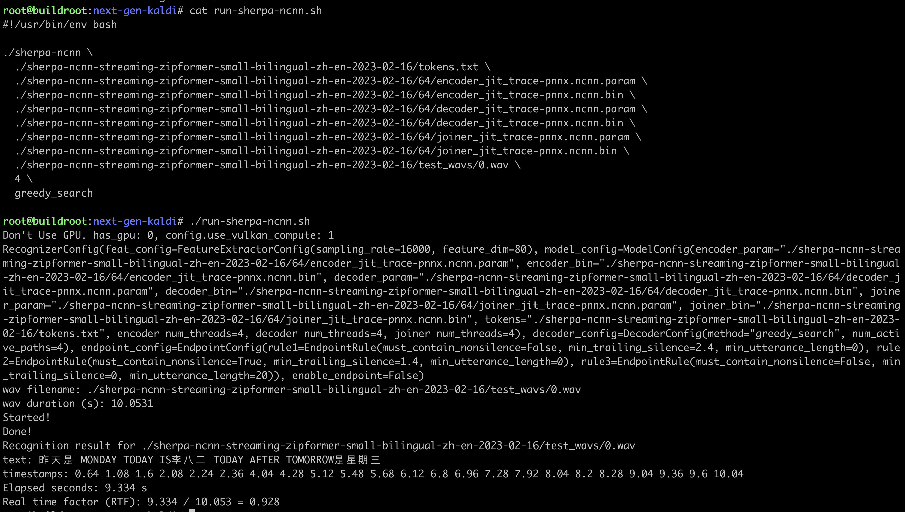
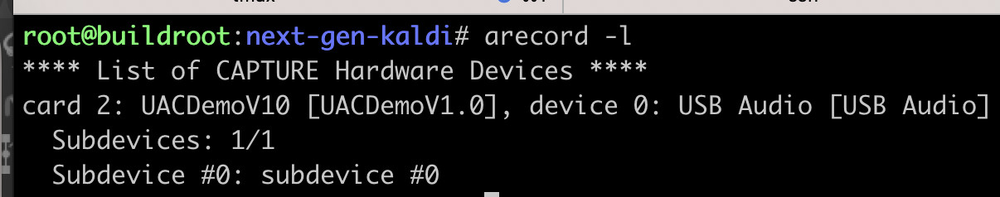
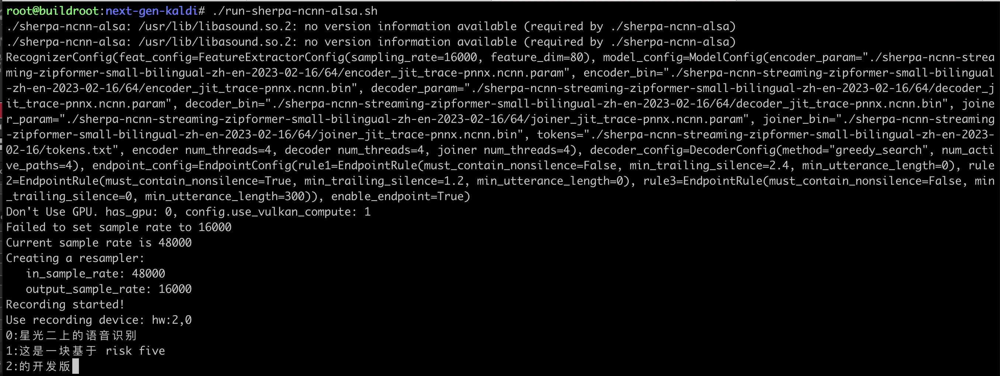

VisionFive 2
This page describes how to run sherpa-ncnn on VisionFive2, which is a 64-bit RISC-V board with 4 CPUs.
Hint
You can find pre-compiled binaries used in this example at
Caution
The latest debian image from https://doc-en.rvspace.org/VisionFive2/Quick_Start_Guide/VisionFive2_QSG/flashing_with_mac_linux.html does not work since it does not support USB devices.
That is, you cannot use USB microphones on the board with the above debian image.
Note
We have compiled https://github.com/starfive-tech/VisionFive2 and
the resulting sdcard.img is available at https://huggingface.co/csukuangfj/visionfive2-sd-card-img.
Please use this image for testing. It supports USB microphones.
The username for this image is root and the password is starfive.
Board info

RTF (4 threads)
We use csukuangfj/sherpa-ncnn-streaming-zipformer-small-bilingual-zh-en-2023-02-16 (Bilingual, Chinese + English) for testing. The RTF is given below:
{kind=link}
You can see that the RTF is less than 1, which means it is able to perform streaming (i.e., real-time) speech recognition.
The following posts the commands used for testing so that you can copy and paste them if you want to test it by yourself.
./sherpa-ncnn \
./sherpa-ncnn-streaming-zipformer-small-bilingual-zh-en-2023-02-16/tokens.txt \
./sherpa-ncnn-streaming-zipformer-small-bilingual-zh-en-2023-02-16/64/encoder_jit_trace-pnnx.ncnn.param \
./sherpa-ncnn-streaming-zipformer-small-bilingual-zh-en-2023-02-16/64/encoder_jit_trace-pnnx.ncnn.bin \
./sherpa-ncnn-streaming-zipformer-small-bilingual-zh-en-2023-02-16/64/decoder_jit_trace-pnnx.ncnn.param \
./sherpa-ncnn-streaming-zipformer-small-bilingual-zh-en-2023-02-16/64/decoder_jit_trace-pnnx.ncnn.bin \
./sherpa-ncnn-streaming-zipformer-small-bilingual-zh-en-2023-02-16/64/joiner_jit_trace-pnnx.ncnn.param \
./sherpa-ncnn-streaming-zipformer-small-bilingual-zh-en-2023-02-16/64/joiner_jit_trace-pnnx.ncnn.bin \
./sherpa-ncnn-streaming-zipformer-small-bilingual-zh-en-2023-02-16/test_wavs/0.wav \
4 \
greedy_search
Real-time speech recognition with a microphone
Since the board does not have microphones, we use a USB microphone for testing.
Caution
We use the image from https://huggingface.co/csukuangfj/visionfive2-sd-card-img/tree/main, which provides support for USB microphones.
After connecting a USB microphone to the board, use the following command to check it:
{kind=link}
The output shows Card 2 and device 0, so the device name is hw:2,0.
The command to start the program for real-time speech recognition is
./sherpa-ncnn-alsa \
./sherpa-ncnn-streaming-zipformer-small-bilingual-zh-en-2023-02-16/tokens.txt \
./sherpa-ncnn-streaming-zipformer-small-bilingual-zh-en-2023-02-16/64/encoder_jit_trace-pnnx.ncnn.param \
./sherpa-ncnn-streaming-zipformer-small-bilingual-zh-en-2023-02-16/64/encoder_jit_trace-pnnx.ncnn.bin \
./sherpa-ncnn-streaming-zipformer-small-bilingual-zh-en-2023-02-16/64/decoder_jit_trace-pnnx.ncnn.param \
./sherpa-ncnn-streaming-zipformer-small-bilingual-zh-en-2023-02-16/64/decoder_jit_trace-pnnx.ncnn.bin \
./sherpa-ncnn-streaming-zipformer-small-bilingual-zh-en-2023-02-16/64/joiner_jit_trace-pnnx.ncnn.param \
./sherpa-ncnn-streaming-zipformer-small-bilingual-zh-en-2023-02-16/64/joiner_jit_trace-pnnx.ncnn.bin \
hw:2,0 \
4 \
greedy_search
A screenshot is given below:
{kind=link}